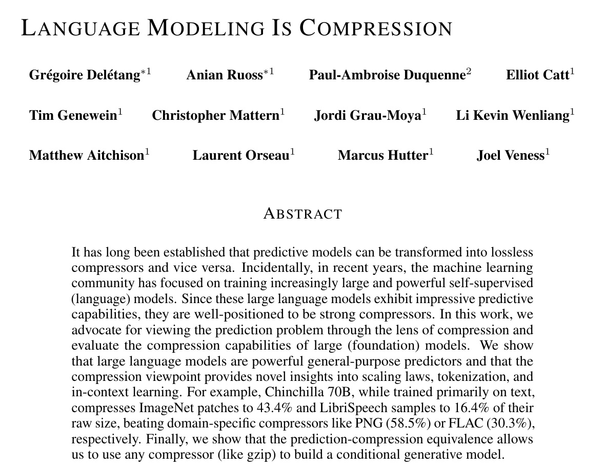
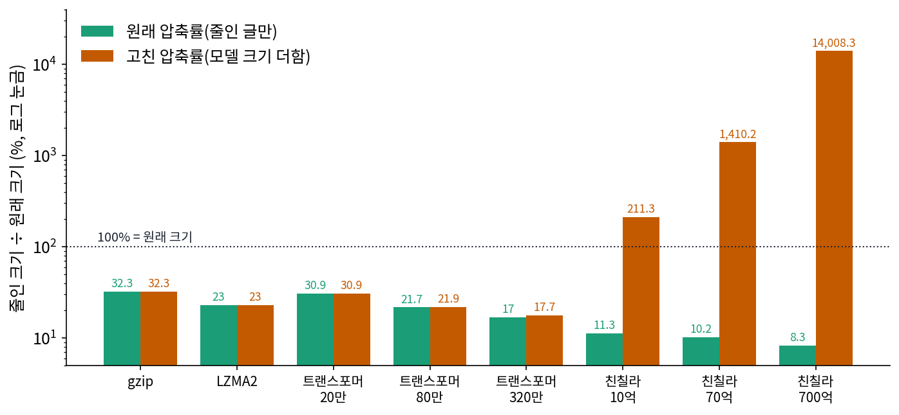
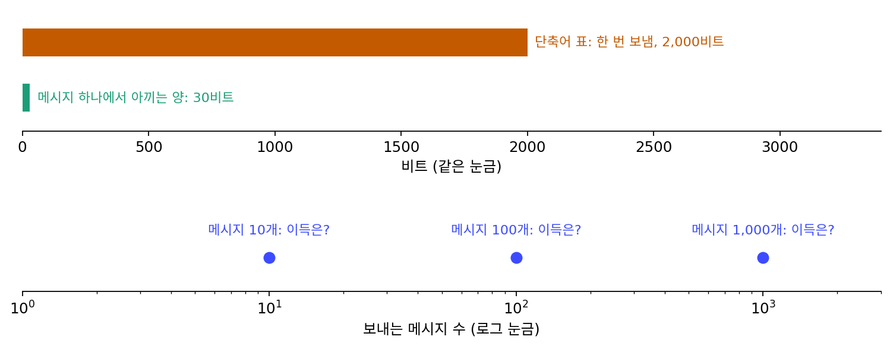
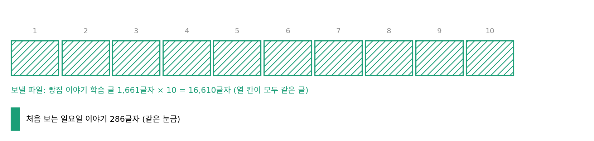
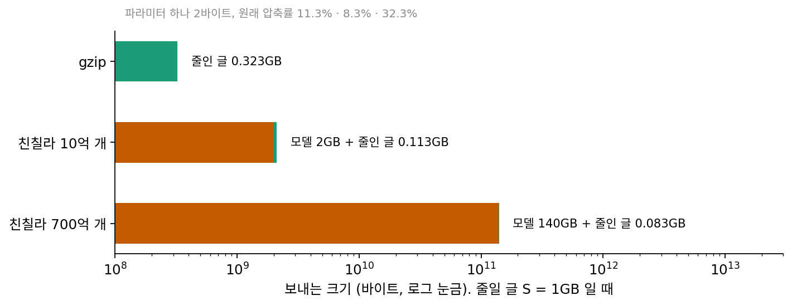

고친 압축률: 모델까지 세면 순위가 바뀐다
언어 모델을 비교하는 표를 보면 대개 처음 보는 글에서의 손실이나 바이트당 비트가 낮은 순서로 줄을 선다. 코드 길이를 다룰 때 본 친칠라도 위키백과 1GB(enwik9)를 원래 크기의 8.3% 로 줄여 gzip 의 32.3% 를 크게 앞섰다. 그런데 산술 코딩으로 줄인 글을 되살리려면 받는 쪽에도 똑같은 예측기가 있어야 했다. 최소 기술 길이는 모델을 적는 비트 L(모델)과 그 모델로 자료를 적는 비트 L(자료∣모델)을 더해야 공평하다고 했다. 이 셈으로 줄을 다시 세우면 순위는 어떻게 될까?
역사: 풀이 프로그램까지 재는 대회, 모델까지 재는 표
2006년에 시작한 허터 상은 처음부터 압축 파일의 크기에 풀어 주는 프로그램의 크기를 더해 쟀다. 그러지 않으면 위키백과 전체를 풀이 프로그램 안에 넣어 두고 압축 파일은 0바이트라고 우기는 참가자를 막을 수 없기 때문이다.
델레탕(Grégoire Delétang) 외의 「언어 모델링은 압축이다」(ICLR 2024)는 같은 생각을 언어 모델에 그대로 적용했다. 파라미터 하나를 2바이트로 쳐서 모델의 크기를 압축 결과에 더한 값을 함께 실었다. 논문의 표 1에서 enwik8(위키백과 100MB)로 직접 학습한 작은 트랜스포머들은 파라미터가 20만, 80만, 320만 개라 모델 크기를 더해도 거의 변하지 않았다(30.9%, 21.7% → 21.9%, 17.0% → 17.7%). 큰 모델은 사정이 달랐다. 친칠라 10억 개는 11.3% 가 211.3% 로, 70억 개는 10.2% 가 1,410.2% 로, 700억 개는 8.3% 가 14,008.3% 로 바뀌었다. 저자들은 모델을 키우면 이 고친 값이 줄다가 어느 크기부터 다시 늘어나며, 그 꺾이는 크기가 자료의 양에 달렸다고 적었다.


풀이 프로그램 크기를 더하는 건 당연하지 않아요? 0바이트 꼼수는 누구나 떠올릴 것 같은데요.

대회에서는 처음부터 당연했죠. 그런데 언어 모델 논문들은 오랫동안 처음 보는 글의 손실만 비교했어요. 왜 모델 크기를 세지 않았을까요?

음… 언어 모델은 무언가를 보내려고 만든 게 아니라서요? 받는 쪽이라는 게 처음부터 없었으니까.

그래요. 언어 모델을 압축기로 실제로 돌려 보는 일도 쉽지 않았어요. 델레탕 외도 enwik9 를 한꺼번에 넣지 않고 2,048바이트 조각마다 따로 줄였어요. 1GB 를 한 글자씩 큰 모델에 넣어 확률을 뽑는 것만으로도 큰 계산이고요.

조각마다 앞 문맥 없이 새로 시작하면 압축률은 손해를 볼 것 같은데요. 그래도 700억 개짜리는 8.3% 였고요.
그 8.3% 에 모델 140GB 를 더하면 얼마가 되는지를 표 1 이 나란히 실은 거예요.

허터 상이 풀이 프로그램을 세는 것도, 델레탕 외가 파라미터를 세는 것도 받는 쪽에 보낼 것을 모두 센다는 뜻이라면, 표를 쓰는 작은 예측기도 표를 보내는 비트까지 세면 순위가 바뀔까요?
빵집 이야기를 일곱 예측기로, 모델까지 적기
모델 크기를 더하는 셈을 손에 잡히는 크기에서 해 보자. 코드 길이에서 쓴 빵집 이야기의 학습 글 1,661글자를 다시 쓴다. 이번에는 처음 보는 글을 적는 대신 학습 글 자체를 적되, 받는 쪽이 아무것도 모른다고 둔다. 그러면 예측기의 표도 함께 보내야 한다. 예측기는 빈도만 보는 것, 앞 1~5글자를 보는 것(본 적 없는 문맥에서는 짧은 문맥에 기댄다), 그리고 학습 글 1,661글자를 그대로 외워 두고 「지금까지 온 글이 학습 글과 같으면 학습 글의 다음 글자에 확률 1 − 1/1024」를 주는 외운 예측기다.
표를 적는 법은 하나를 정해야 한다. 빈도표는 나온 글자마다 「글자(log₂ 239 = 7.90비트) + 횟수」를 적고, 앞 k글자 표는 한 차수 짧은 표의 줄을 문맥으로 삼아 「뒤따른 글자 가짓수 + 글자마다 글자와 횟수」를 적는다. 횟수는 엘리아스 감마 코드(작은 수일수록 짧은 프리픽스 코드)로 적고, 외운 예측기의 표는 학습 글 자체라 글자마다 7.90비트다. 계산은 sources/limits/s2_twopart.py.
| 예측기 | 표의 줄 수 | 모델 비트 | 자료 비트 (학습 글) | 합 | 시험 글 286글자 |
|---|---|---|---|---|---|
| 빈도만 | 233 | 2,708 | 9,811 | 12,519 | 1,768 |
| 앞 1글자 | 831 | 9,756 | 4,515 | 14,271 | 1,165 |
| 앞 2글자 | 1,806 | 21,166 | 2,376 | 23,542 | 1,131 |
| 앞 3글자 | 2,997 | 35,380 | 1,419 | 36,799 | 1,131 |
| 앞 4글자 | 4,331 | 51,339 | 907 | 52,246 | 1,140 |
| 앞 5글자 | 5,760 | 68,448 | 636 | 69,084 | 1,148 |
| 외운 예측기 | 1,661 | 13,139 | 12 | 13,151 | 2,269 |
자료 비트만 보면 순위는 외운 예측기 < 앞 5글자 < 앞 4글자 < … < 빈도만이고, 외운 예측기는 학습 글을 12비트로 적는다. 모델 비트를 더하면 순위가 뒤집혀 빈도만 < 외운 예측기 < 앞 1글자 < … < 앞 5글자가 된다. 외운 예측기의 합 13,151비트가 239가지 글자를 고르게 믿고 모델 없이 적는 13,123비트보다도 긴 것은, 학습 글을 외운 표를 보내는 일이 학습 글을 그대로 보내는 일과 같기 때문이다. 앞 5글자 예측기의 표는 학습 글보다 다섯 배 넘게 길다.
모델을 적는 비트 L(모델)을 넣은 이 셈을, 원래 크기에 대한 비율로 적은 것을 고친 압축률 (모델 크기까지 더해 잰 압축률, adjusted compression rate)이라 한다.
델레탕 외의 표 1을 그림으로 옮기면 작은 트랜스포머의 두 막대는 거의 같은 높이이고, 친칠라는 원래 압축률이 낮을수록 고친 압축률이 높다.

ML에서: 파라미터를 적는 비트를 줄이면
고친 압축률의 분자에서 모델 비트를 줄이는 방법은 파라미터 수를 줄이거나 파라미터 하나를 적는 비트를 줄이는 것, 이렇게 둘이다. 요즘 큰 모델의 파라미터를 8비트나 4비트짜리 값으로 반올림해(양자화) 배포하는 것은 저장과 계산을 아끼려는 일이지만, 코드 길이의 눈으로 보면 L(모델)을 줄이는 일이기도 하다. 친칠라 700억 개를 파라미터 하나에 4비트로 적으면 모델은 35GB 가 되고, 원래 압축률 8.3% 가 그대로라고 쳐도 고친 압축률은 3,508.3% 다. 1GB 를 줄이는 데는 여전히 맞지 않는 크기다. 모델을 적는 비트가 자료를 아끼는 비트보다 작아지려면 자료가 얼마나 커야 하는지는 문제 6에서 직접 구해 본다.
문제 4. 단축어 표를 먼저 보낼까
친구와 문자를 자주 주고받아서, 자주 쓰는 말 100개를 짧은 기호로 바꾸는 단축어 표를 만들었다. 표를 친구에게 보내는 데 2,000비트가 들고, 표가 있으면 메시지 하나에 평균 30비트를 아낀다. (가) 메시지 10개, 100개, 1,000개를 보낼 때 표를 먼저 보내면 얼마나 이득인가? (나) 몇 번째 메시지부터 이득인가?

(가)부터요. 메시지 10개면 30 × 10 = 300비트를 아끼는데 표에 2,000비트를 썼으니 1,700비트 손해예요. 100개면 3,000 − 2,000 = 1,000비트 이득, 1,000개면 28,000비트 이득이고요.
(나)는 2,000 ÷ 30 = 66.7이니까 67번째 메시지부터 이득이네. 메시지마다 아끼는 30비트가 커 보여도, 몇 번 보낼지가 먼저야.
빵집 이야기의 표에서는 어느 예측기가 이 경우였죠?

외운 예측기랑 앞 5글자 예측기요. 자료 비트는 엄청 아끼는데, 1,661글자라는 메시지 양에 비해 표가 너무 커요.

표의 값어치는 앞으로 보낼 메시지가 얼마나 많으냐가 정하는 거네. 글이 열 배, 백 배로 늘면 같은 표가 이득으로 돌아설 수도 있고.
문제 5. 같은 글을 열 번 이어 붙인 파일
빵집 이야기 학습 글 1,661글자를 열 번 이어 붙인 파일(16,610글자)을 받는 쪽이 아무것도 모르는 상태에서 보낸다. 모델 + 자료 비트는 빈도만 예측기가 102,237비트, 앞 2글자 예측기가 51,132비트, 외운 예측기(학습 글 한 벌을 외우고, 「열 번」이라는 횟수만 더 적음)가 13,158비트다. (가) 한 벌만 보낼 때(빈도만 12,519, 앞 2글자 23,542, 외운 예측기 13,151)와 순위가 어떻게 바뀌는가? (나) 학습 자료에 같은 글이 여러 번 들어 있으면, 「모델 + 자료」가 짧은 모델을 고르는 학습은 무엇을 배우게 되는가?

한 벌일 땐 빈도만이 1등, 외운 예측기가 2등, 앞 2글자가 3등이었는데, 열 벌이면 외운 예측기가 13,158비트로 1등이고 앞 2글자, 빈도만 순이에요.
외운 예측기는 글이 열 배가 됐는데 7비트밖에 안 늘었네.
그럼 열 벌짜리 파일에서는 외운 예측기가 가장 좋은 설명인가요?
그 파일만 놓고 보면 맞아요. 「이 글을 열 번」이 그 파일의 가장 짧은 설명이니까요.
그 예측기로 처음 보는 일요일 이야기를 적으면요?
표에서 보면 2,269비트요. 앞 2글자는 1,131비트고요. 두 배 가까이 길어요.

파일을 짧게 적는 것과 빵집 글을 잘 아는 건 다른 거네요.

그래요. 같은 글이 되풀이되면 외워 두는 것이 정말로 짧은 설명이 돼요. 학습 자료를 짧게 적는 것만 목표로 삼으면, 모델은 되풀이된 글을 외우게 돼요.

그래서 언어 모델 학습 자료에서 중복된 문서를 지우는구나. 같은 문서가 백 번 들어가면 모델 입장에선 그걸 외우는 게 손실을 줄이는 가장 쉬운 길이니까요. 잘 배웠는지는 처음 보는 글로도 재 봐야 하고요.
문제 6. 친칠라 10억 개와 700억 개
델레탕 외의 표 1에서 enwik9 의 원래 압축률은 친칠라 10억 개가 11.3%, 700억 개가 8.3% 다. 파라미터 하나를 2바이트로 친다. 줄일 글이 S 바이트이고 원래 압축률이 S 와 상관없이 그대로라고 할 때, (가) 「모델 + 줄인 글」이 두 모델에서 같아지는 S 는? (나) 700억 개 모델이 「모델 + 줄인 글」로 gzip(32.3%)을 이기기 시작하는 S 는? (다) 이 가정은 어디서 무리인가?

(가)는 2 × 10⁹ + 0.113 S = 1.4 × 10¹¹ + 0.083 S 를 풀면 S = 1.38 × 10¹¹ ÷ 0.03 = 4.6 × 10¹² 바이트, 4.6TB 예요. (나)는 1.4 × 10¹¹ ÷ (0.323 − 0.083) = 5.83 × 10¹¹, 583GB 고요.
enwik9 는 1GB 였죠. 583GB 는 그 몇 배죠?

583배요. 위키백과 1GB 에서는 700억 개 모델이 gzip 을 이길 길이 없네요. 그럼 친칠라는 압축기로는 쓸모없는 거예요?
4.6TB 를 넘으면 큰 모델이 더 짧으니까 쓸모없다고는 못 하겠어. 큰 모델은 자료가 아주 많을 때 제값을 하는 거지. 친칠라는 토큰 1.4조 개로 학습했으니까 바이트로는 1GB 보다 수천 배 큰 글을 봤을 거고.
그렇게 큰 글을 줄일 때도 원래 압축률이 11.3%, 8.3% 그대로일까요?
글이 같은 원천에서 계속 나온다면 크게 안 변할 것 같아요.
모델이 그 많은 글로 더 배울 수 있다면요? 그리고 처음 보는 종류의 글이 섞인다면요?

더 배우면 압축률이 더 내려가고, 처음 보는 글이 섞이면 올라가겠네요. 어느 쪽이든 그대로는 아니에요. 그러니까 4.6TB 는 「이 가정 아래」의 추정값이에요.

자취방에 커피 머신을 살지 정할 때 머신값을 몇 잔에 나눠 낼지로 손익을 따지잖아요. 머신값이 모델 크기, 잔 수가 줄일 글의 크기예요. 그런데 오래 쓰다 보면 원두를 싸게 사는 법도 알게 되니까, 한 잔 원가가 그대로라는 가정도 깨지고요.